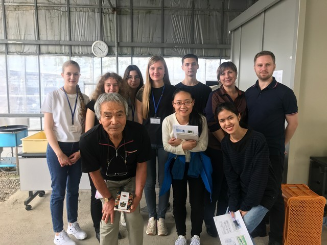
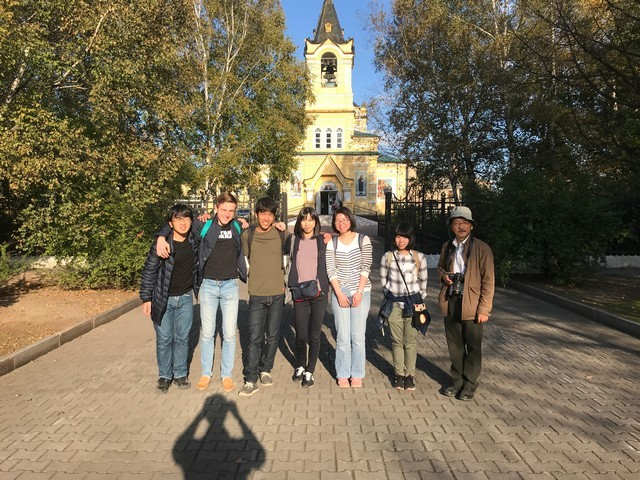
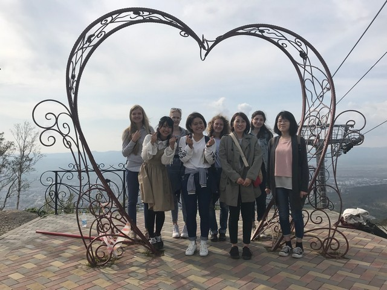
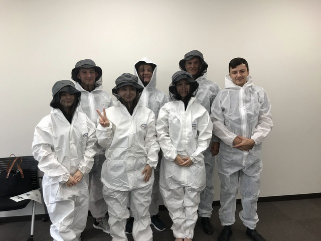
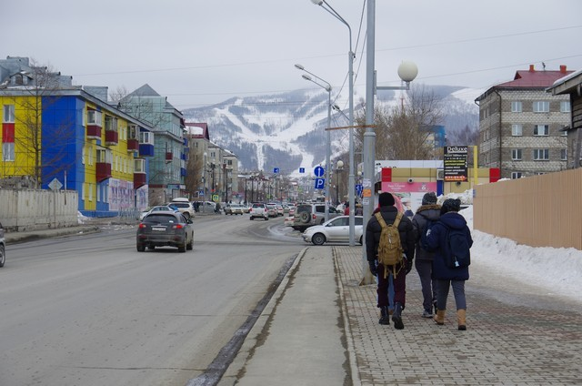
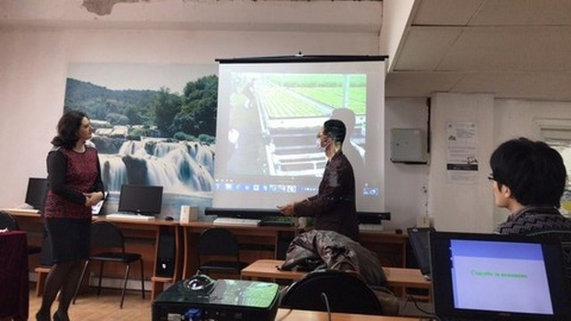
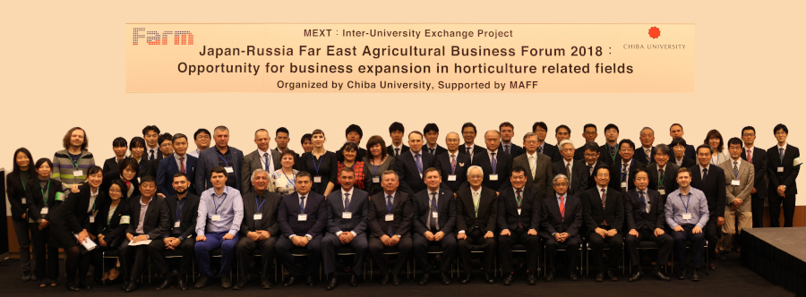
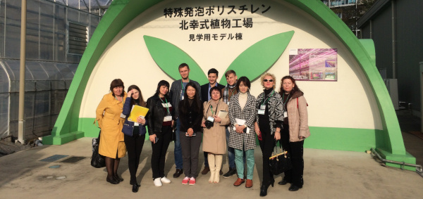

-
Study Abroad Khabarovsk
Visiting Khabarovsk to get part in "Study Abroad" exhibition
-
"Facility Gardening" Symposium
Organized by Chiba University
-
Teacher from the Primorsky Academy arrived
During the course, new knowledge on the use of various nutrient solutions for growing plants in Plant Factory was obtain.
-
Exchange students from Sakhalin State Institute came
Second part of the exchange students from Sakhalin State Institute came to the course under the FARM program. During the two-week course, they learned about Plant Factorys with artificial light
-
Visiting to Primorskaya State Agricultural Academy
Second part of the exchange students from Chiba University visited Primorskaya State Agricultural Academy.
-
Visiting to Sakhalin State Institute
Second part of the exchange students from Chiba University went to the Sakhalin State Institute.
-
Exchange students from Primorskaya State Agricultural Academy came
Second part of the exchange students from Primorskaya State Agricultural Academy came to the course under the FARM program. During the two-week course, they learned about Plant Factorys with artificial light.
-
Students from Chiba University went to the Sakhalin State Institute
Students from Chiba University went to the Sakhalin State Institute.
-
Students from Chiba University went to Primorskaya State Agricultural Academy
Students from Chiba University went to Primorskaya State Agricultural Academy
-
First business forum within the FARM program
The forum was attended by Japanese experts, institutions and business representatives and representatives of the Russian partner institutions.
-
Agreement with the Sakhalin State Institute
The Sakhalin State Institute came to Chiba University. A cooperation agreement was signed within the framework of the FARM program.

-
The first part of the exchange students from Primorskaya State Agricultural Academy came
The first students came to the summer course under the FARM program. During the two-week course, they learned about Plant Factories with artificial light.
-
Agreement with the Primorskaya State Agricultural Academy
Primorskaya State Agricultural Academy came to Chiba University. A cooperation agreement was signed within the framework of the FARM program.

-
Visiting Primorskaya State Agricultural Academy
Chiba University deligation went to Primorskaya State Agricultural Academy.
-
Start of FARM program
Official start of the FARM Project
-
Program discussion
In 2017 it was decided to start the FARM program. The program began operating at the Center for Environment, Health and Field at The Chiba University.